Diez corridas en tres herramientas: Claude Code, Codex y Antigravity. Todas recibieron el mismo encargo, palabra por palabra: diseñar el tren CAF del Metro de Medellín y el skyline de la ciudad con las guías docs/ia/tren.md y docs/ia/fondo.md, a partir de las mismas dos imágenes. Cada una trabajó en su propia carpeta, desde el mismo commit, con libertad para validar y renderizar cuantas veces quisiera.
GPT-6-Astra y GPT-6.1-Sol · Codex
Los más completos
Tren con los cuatro rasgos del CAF y un skyline donde cada monumento está dibujado. Astra lo hizo en 4 min 48 s con 10.6k tokens de salida.
GPT-6.1-Terra · Codex
El más eficiente
Tren de 4/4 en 2 min 13 s, con 3.6k tokens de salida y solo 475 de razonamiento, aun en xhigh. Su skyline quedó a medias.
Sonnet 5.5 · dos herramientas
La herramienta pesa
Con el mismo prompt, Sonnet sacó 4/4 en Claude Code y 1/4 en Antigravity, donde terminó en minuto y medio con un solo render.
Haiku 5.5 · Claude Code
El que más gastó
81.8k tokens de salida, 70 mil de razonamiento, para un tren sin verde, de frente plano y sin catenaria.
Las diez corridas
Tren: cuántos de los cuatro rasgos del CAF de Medellín tiene (franja amarilla, franja verde, cara negra con mejilla blanca, catenaria). Skyline: qué tanto se reconoce la imagen de referencia.
Modelo
Tiempo
Salida
Razonamiento
Entrada
Valid. / renders
Tren
Skyline
Claude Code
Opus 5.5xhigh
7 min 24 s
41,495
24,442
3.54 M
5 (1 con error) / 5
3/4sin amarillo
reconocible
Sonnet 5.5xhigh
4 min 23 s
31,168
19,534
2.30 M
2 / 4
4/4
a medias
Haiku 5.5xhigh
6 min 42 s
81,831
70,333
3.28 M
2 / 3
1/4sin verde, frente distinto al CAF, sin catenaria
genérico
Codex
GPT-6.1-Solxhigh
6 min 07 s
14,187
6,847
760k
2 / 3
4/4
reconocible
GPT-6.1-Terraxhigh
2 min 13 s
3,609
475
511k
3 / 2
4/4
a medias
GPT-6-Lunaxhigh
7 min 57 s
22,090
17,746
726k
5 / 1
2/4sin verde, frente distinto al CAF
a medias
GPT-6-Astraxhigh
4 min 48 s
10,576
3,221
605k
2 / 4
4/4
reconocible
Antigravity
Gemini 4 Argonhigh
14 min 17 s
66,630
54,162
1.44 M
2 / 2
3/4sin amarillo
reconocible
Gemini 3.8 Flashhigh
12 min 00 s
45,262
34,964
3.92 M
3 / 5
3/4sin amarillo
genérico
Sonnet 5.5high
1 min 23 s
7,948
no reporta
252k
3 / 1
1/4sin verde, frente distinto al CAF, sin catenaria
genérico
Tokens antes de entregar
Tokens que generó cada modelo hasta entregar. El razonamiento es lo que pensó entre pasos; la salida visible es el código, el JSON y el texto que escribió. Antigravity no reportó razonamiento para Sonnet, así que su barra es toda salida visible.
RazonamientoSalida visible
Mismo modelo, otra herramienta
Sonnet 5.5 corrió dos veces con el mismo prompt: en Claude Code con esfuerzo xhigh y en Antigravity con high, el máximo que ofrece ahí. En Claude Code iteró, miró la escena completa y entregó un tren con los cuatro rasgos. En Antigravity terminó en minuto y medio, renderizó una sola vez y entregó un tren sin verde ni catenaria. Parte de la diferencia puede ser el esfuerzo, pero la forma de trabajar cambió por completo.
Claude Code · xhigh
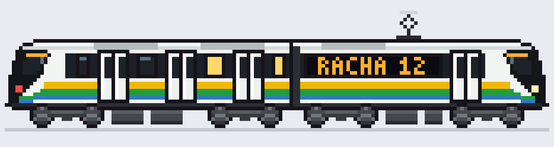
Tiempo
4 min 23 s
Salida
31,168
Renders
4
Tren
4/4
Antigravity · high
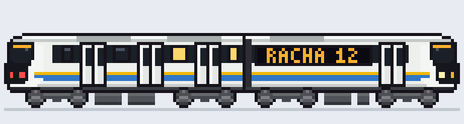
Tiempo
1 min 23 s
Salida
7,948
Renders
1
Tren
1/4
Lo que entregó cada uno
Todos se renderizaron después con los mismos datos de muestra: 1,200 contribuciones, racha de 12 días, TypeScript (franja azul). La escena sigue el tema claro u oscuro de tu pantalla.
Claude Code
Opus 5.5
xhigh · 7 min 24 s · 41.5k salida · tren 3/4 · skyline reconocible
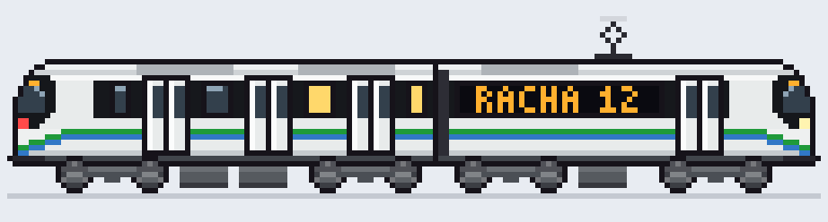
Tren. Franja verde y del lenguaje que bajan en curva por la trompa, cara negra inclinada y pantógrafo. No tiene amarillo.
Fondo. Dibujó los monumentos píxel por píxel: basílica de dos torres con cruces, palacio del reloj, Coltejer con su aguja; agregó cordilleras al fondo.
Proceso. El que más corrigió entre los Claude: 5 validaciones (una falló y la arregló) y 5 renders, con la escena completa en ambos temas.
xhigh · 6 min 07 s · 14.2k salida · tren 4/4 · skyline reconocible
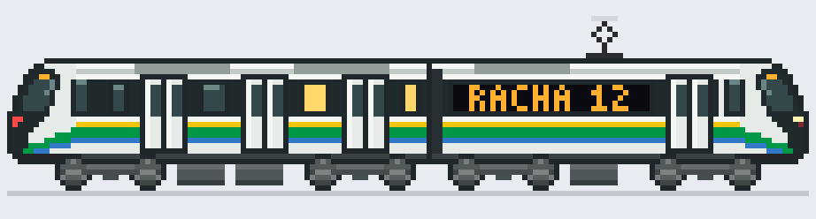
Tren. Amarilla, verde y del lenguaje curvándose hacia una cara negra inclinada con faro en la mejilla; pantógrafo. Usó el color "cuerpo oscuro" para el verde.
Fondo. Seis siluetas dibujadas: catedral de dos campanarios, edificio de arcos, palacio con torrecilla, Coltejer, iglesia del reloj. Sin relleno, así que quedan huecos.
Proceso. Escribió sus propios scripts de diseño y revisión dentro de comparativa/: 2 validaciones y 3 renders.
xhigh · 2 min 13 s · 3.6k salida · tren 4/4 · skyline a medias
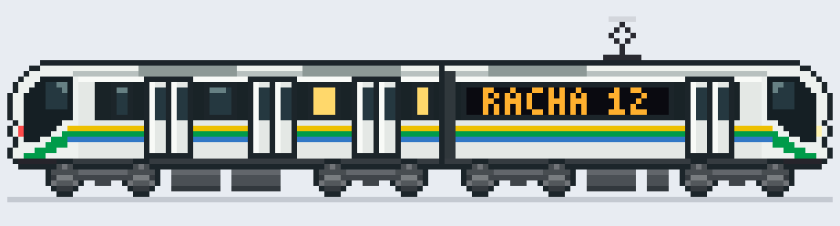
Tren. Amarilla, verde fina y del lenguaje; cara oscura con una diagonal verde que baja por la trompa; pantógrafo.
Fondo. Ocho piezas, tres dibujadas; una torre afilada y dos iglesias sobre relleno genérico.
Proceso. El más rápido de los diez: 2 min 13 s y solo 475 tokens de razonamiento, aun en xhigh. Los acentos de los nombres quedaron como "?" (no se dibujan).
xhigh · 4 min 48 s · 10.6k salida · tren 4/4 · skyline reconocible
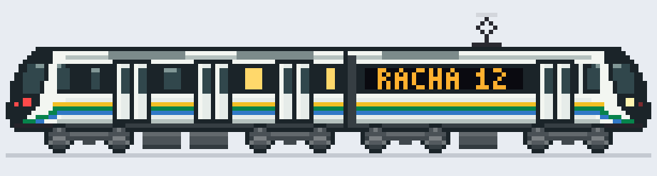
Tren. Amarilla, verde y del lenguaje, con cara negra inclinada y una diagonal verde en la mejilla; pantógrafo. Usó el color "muy oscuro" de la paleta para el verde.
Fondo. Las ocho siluetas dibujadas, en el orden de la imagen: iglesia de dos campanarios, fachada con frontón, edificio con torre central, palacio con templete, Coltejer como la más alta e iglesia neogótica. Sin relleno.
Proceso. Cuatro minutos y medio, 2 validaciones y 4 renders; escribió un script propio para generar el fondo.
high · 14 min 17 s · 66.6k salida · tren 3/4 · skyline reconocible
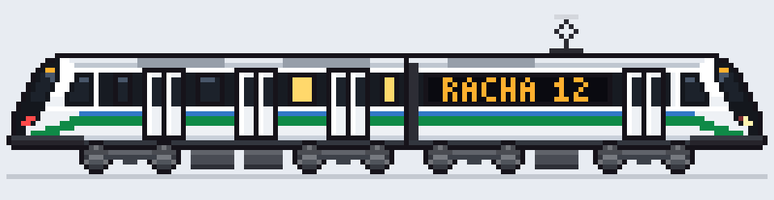
Tren. Verde y del lenguaje, sin amarillo; la trompa más elaborada de la prueba: 19 columnas, pilar blanco oblicuo, ventanilla trapezoidal y diagonal verde.
Fondo. Ocho hitos con nombre propio, siete dibujados: Catedral Metropolitana, Edificio Vásquez, Veracruz, Torre del Café, Palacio de la Cultura, Coltejer, Jesús Nazareno.
Proceso. El más lento: 14 min y 54 mil tokens de razonamiento para 2 validaciones y 2 renders.
high · 12 min 00 s · 45.3k salida · tren 3/4 · skyline genérico
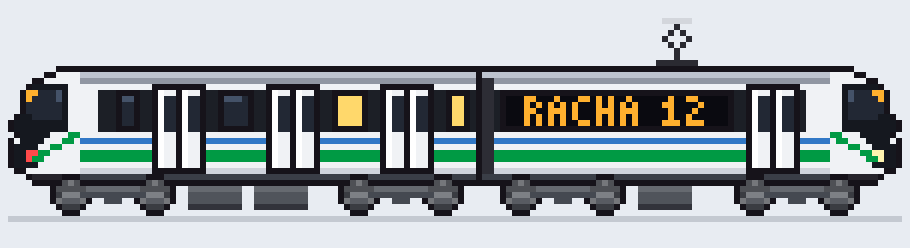
Tren. Doble verde y del lenguaje, sin amarillo; diagonal verde en la trompa; pantógrafo.
Fondo. Diez piezas con nombres reales (Carré, Torre del Café, Museo de Antioquia, cerro Pan de Azúcar), pero solo la catedral está dibujada; el resto son bloques.
Proceso. Doce minutos, 5 renders y la mayor entrada procesada de todas: 3.9 millones de tokens.
Codex sacó los trenes más fieles con la menor salida. Tres de sus cuatro modelos (Sol, Terra y Astra) tienen los cuatro rasgos, con entre 3.6k y 14.2k tokens de salida; los otros seis gastaron entre 7.9k y 81.8k.
Más razonamiento no compró fidelidad. Haiku (70 mil tokens de razonamiento) y Gemini 4 Argon (54 mil) entregaron trenes menos fieles que GPT-6.1-Terra, que razonó 475.
El amarillo y el verde juntos fueron la prueba más difícil: solo 4 de 10 pusieron ambos (Sonnet en Claude Code, Sol, Terra y Astra). Los demás conservaron uno y le dieron la otra fila a la franja del lenguaje.
Los cuatro skylines reconocibles (Opus, Sol, Astra y Argon) dibujaron los monumentos uno por uno con rows. Ninguno de los que se apoyaron en las formas del catálogo llegó ahí.
La herramienta cuenta tanto como el modelo: el mismo Sonnet pasó de 4/4 a 1/4 al cambiar de Claude Code a Antigravity.
Es una sola corrida por modelo: una muestra, no un promedio. El estilo puede cambiar de una corrida a otra.